模式简介
合作任务模式是星际争霸2：虚空之遗中独具特色的全新游戏模式，由两名玩家扮演着星际争霸宇宙中的独特且极具标志性的“指挥官”的角色，完成一系列具有挑战性的任务。
“指挥官”
合作任务模式中所有指挥官都有独特的技能和强力的兵种。你可以通过完成任务获取经验来提升指挥官的等级以解锁更多技能和单位。吉姆·雷诺、凯瑞甘、阿塔尼斯三位指挥官是完全免费的，其余指挥官可以免费玩到等级5。
| 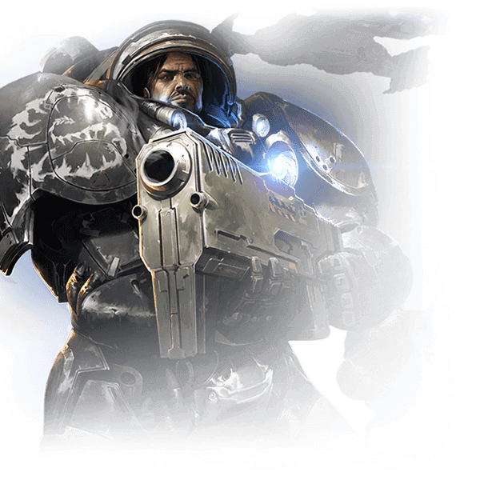 | 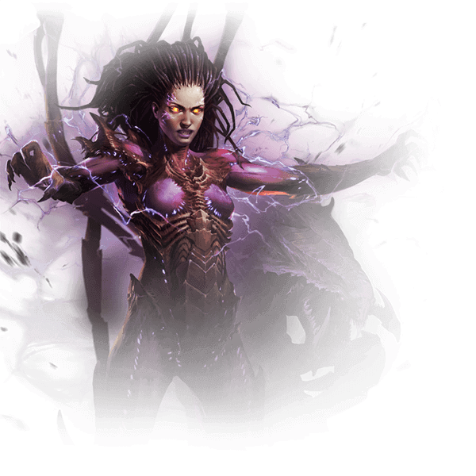 | 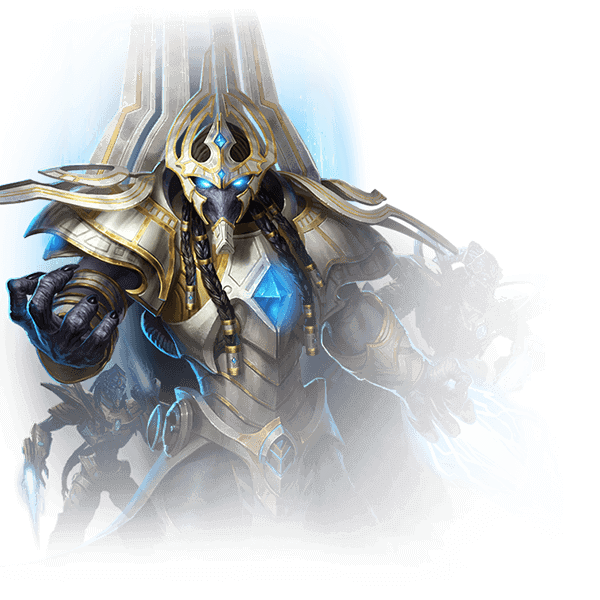 | ||
吉姆·雷诺 |
凯瑞甘 |
阿塔尼斯 |
||
| 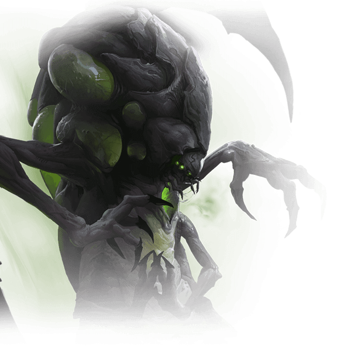 | 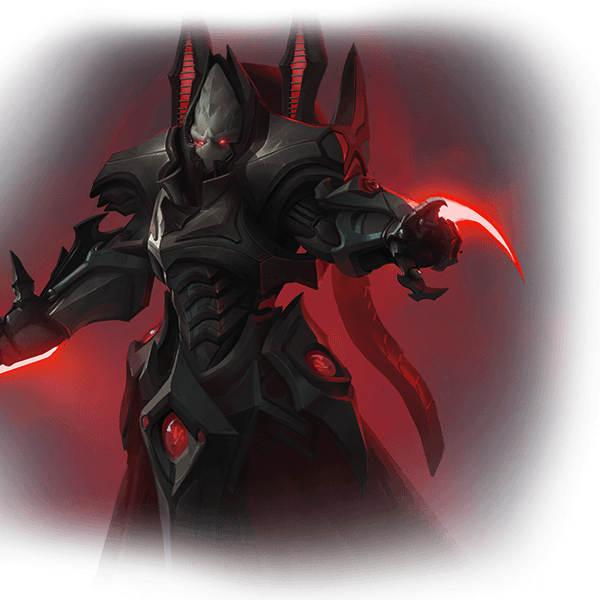 | 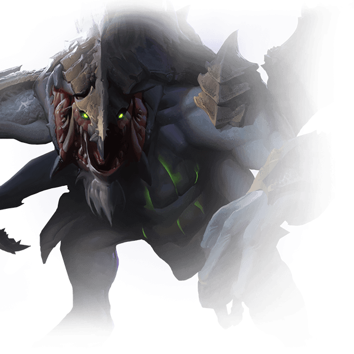 | 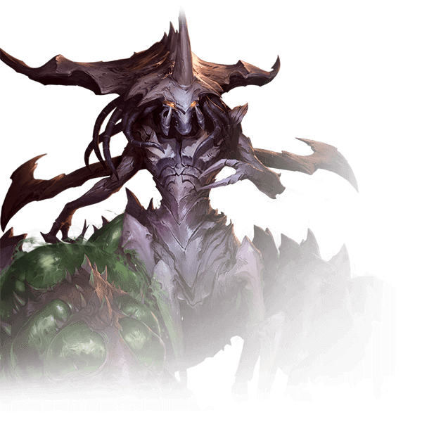 | 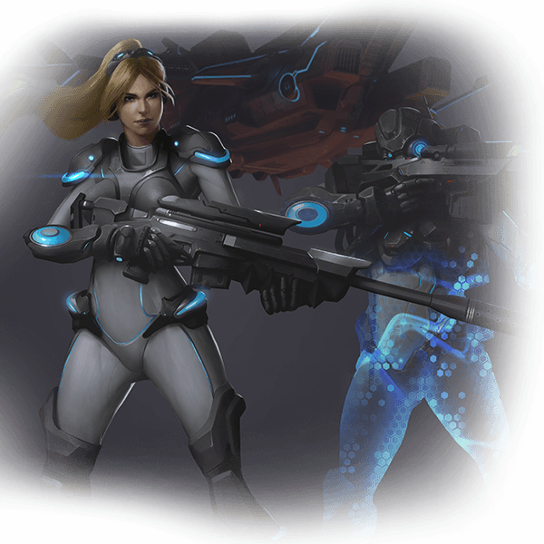 |
阿巴瑟 |
阿拉纳克 |
德哈卡 |
扎加拉 |
诺娃 |
| 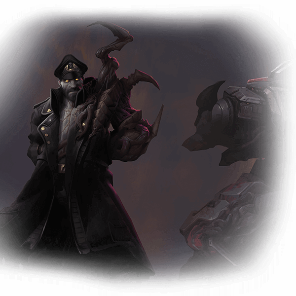 | 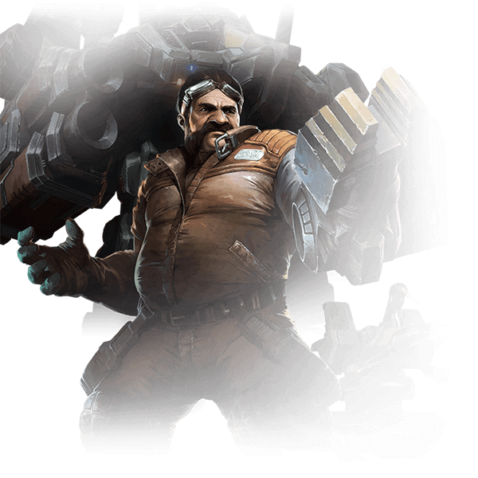 | 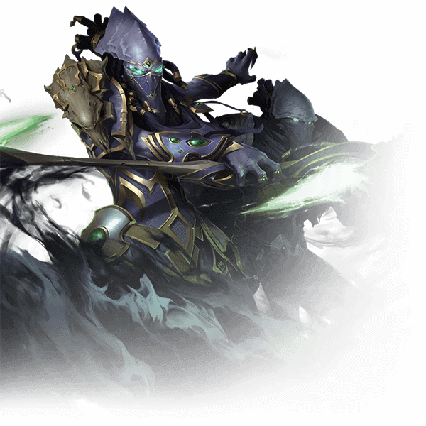 | 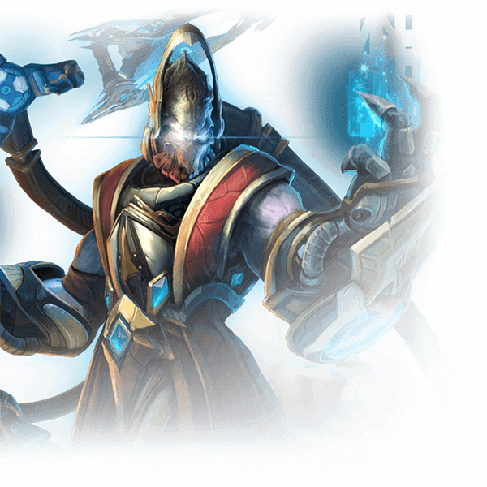 | 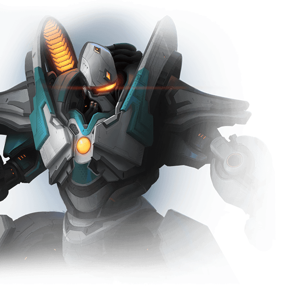 |
斯托科夫 |
斯旺 |
沃拉尊 |
凯拉克斯 |
菲尼克斯 |
任务
在各种艰难险阻中磨练自己的技能。努力提升等级，解锁新技能和单位，用越加强大的力量征服敌人。
每个任务都有特定的故事背景和不同的场景地图、目标，完成任务可以获得经验值提升指挥官等级。
经验和等级
合作任务中的每一个任务都会在结束时给予不同数量的经验值。一旦指挥官收集到足够的经验值，他将升级并获得新的能力、单位或升级能力或单位。等级最大值是15。
如果其中一名指挥官达到了最高级，接下来获取的任何经验值都将作用于精通等级。这些等级适用于所有达到最高级的指挥官。这些级别中的每一级都在指挥官的三种方向中拥有一个精通点数。一个精通点数包含两个奖励，可以升级30次。这些奖励会给某些单位或能力提供一点增益。精通点数的上限是90，最终，允许你最大化每一个方向的精通点数。
达到90级之后，你依然可以获得经验提升等级，但这样的等级提升将不会给你任何能力上的奖励。
突变任务
现在每周星际争霸2都会提供一项全新挑战，这个挑战会包含不同的突变因子，完全改变游戏的玩法。

突变因子可能但绝不仅限于：
| 行尸走肉 | 击杀单位会产生被感染的人类。 |
| 暗无天日 | 战争迷雾将被黑色遮罩覆盖。 |
| 丧尸大战 | 地图周围会刷新大量被感染的人类。 |